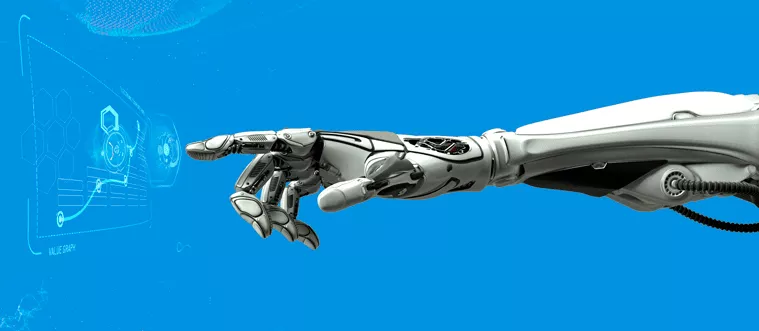
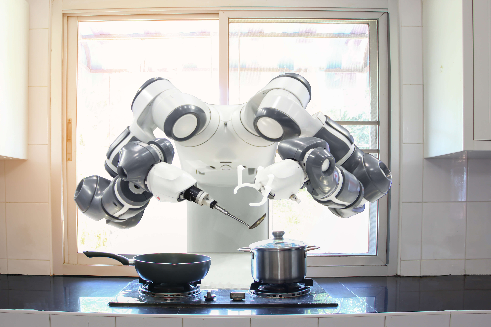

<section id="content-wrap" class="blog-single">
    <div class="row">
        <div class="col-twelve">

            <article class="format-standard">  

                <div class="content-media">
                     <div class="post-thumb">
                         &NonBreakingSpace;&NonBreakingSpace;&NonBreakingSpace;&NonBreakingSpace;&NonBreakingSpace;&NonBreakingSpace;&NonBreakingSpace;&NonBreakingSpace;&NonBreakingSpace;&NonBreakingSpace;&NonBreakingSpace;&NonBreakingSpace;&NonBreakingSpace;&NonBreakingSpace;&NonBreakingSpace;	 
                     </div>  
                 </div>

                 <div class="primary-content">

                     <h1 class="page-title">Robôs na vida moderna</h1>	

                     <ul class="entry-meta">
                         <li class="date">Junho 23, 2013</li>						
                         <li class="cat"><a href="">Dia a Dia</a><a href="">Influência</a></li>				
                     </ul>						

                     <p class="lead" align="justify">Os robôs saíram da ficção científica para fazer parte da vida moderna de forma cada vez mais intensa. Conheça algumas das principais áreas onde robôs estão presentes no nosso cotidiano.</p> 

                     <p align="justify">O termo robô foi usado pela primeira vez em 1921, numa peça de teatro escrita por Karel Capek na então Tchecoslováquia. Em tcheco, a palavra significa "trabalho" e foi usada no sentido de uma máquina que substitui o trabalho humano. O reconhecido escritor de ficção científica, Isaac Asimov, cunhou o termo "robótica" para definir o campo de estudo dos robôs. Asimov é considerado um dos principais autores da robótica e foi o maior expoente literário de ficção científica do século 20.
                     </p>

                     <p></p>

                     <h2>1. Doméstica</h2>
                     <p align="justify">Robôs muitas vezes desempenham tarefas domésticas, como é o caso dos aspiradores de pó e cortadores de grama robóticos. Eles podem limpar vidros e piscinas, varrer ou aspirar o chão e até cuidar do jardim. Pesquisadores trabalham para tornar realidade uma sociedade na qual os robôs convivam com os seres humanos. Eles poderão realizar tarefas simples no lar, como acender a luz, carregar as compras e fazer a limpeza. O grande desenvolvimento tecnológico e a descoberta de novos materiais de construção permitirão que, dentro de algumas décadas, haja robôs capazes de entender, analisar e realizar tarefas rotineiras, para tornar o dia a dia mais fácil.
                     
                     <H2>2. Industrial</H2>	
                     <p align="justify">A utilização de robôs nas indústrias é uma realidade em todo o mundo. Eles podem ser usados no transporte automatizado e veículos para transporte de carga. Numa linha de produção, são capazes de desempenhar funções arriscadas para seres humanos, como transportar vidros para montagem de automóveis. A empresa Unimation instalou o primeiro robô industrial em 1961. Hoje, mais de 700.000 robôs são empregados nas indústrias em todo o mundo. Eles proporcionam redução de custos, aumento da produtividade, melhor aproveitamento de matéria-prima, economia de energia, além da possibilidade de montagem de peças em miniatura e coordenação de movimentos complexos.</p>

                     <h2>3. Medicinal</h2>
                     <p align="justify">A utilização de robôs nas indústrias é uma realidade em todo o mundo. Eles podem ser usados no transporte automatizado e veículos para transporte de carga. Numa linha de produção, são capazes de desempenhar funções arriscadas para seres humanos, como transportar vidros para montagem de automóveis. A empresa Unimation instalou o primeiro robô industrial em 1961. Hoje, mais de 700.000 robôs são empregados nas indústrias em todo o mundo. Eles proporcionam redução de custos, aumento da produtividade, melhor aproveitamento de matéria-prima, economia de energia, além da possibilidade de montagem de peças em miniatura e coordenação de movimentos complexos.</p>

                     <h2>4. Militar</h2>
                     <p align="justify">Os sistemas de monitoramento militar aéreo e terrestre incluem o uso dos robôs. A robótica aérea é crescente não somente na área da engenharia aeroespacial. Mais de 50 países já usavam algum tipo de robô para aplicações militares em 2011. Especialistas afirmam que há um mercado crescente para aplicações militares nos próximos dez anos. De acordo com a Força Aérea Brasileira, aviões-robô são capazes de transmitir ao vivo imagens de áreas de interesse. Desta forma, é possível ter uma nova dinâmica das ações de comando, com maior ganho de dados de inteligência e tomada de ações mais rápida.</p>

                     <h2>5. Setor automotivo</h2>
                     <p align="justify">A maior parte dos robôs existentes no Brasil se encontra na indústria automobilística. O índice de automação na indústria automobilística é de 90%, em geral, mas em algumas fases da produção pode chegar a 100%. A indústria automotiva é um dos campos que mais utiliza a tecnologia da robótica. Os robôs são programados para substituir mais de dez homens, além de suportarem condições de trabalho desgastantes, repetitivos ou perigosos.</p>
                     
                 </div>
         </article>
     </div>
 </div>
</section>